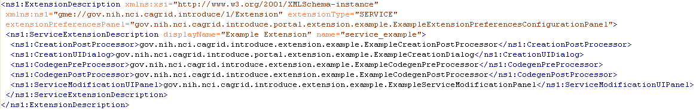

Table of Contents
The Introduce Extension framework currently consists of two styles of extensions; service and data type discovery. These extensions are implemented by service or data type discovery components which add custom funceionality to the Introduce framework. Extensions are added to the toolkit in the form of extension plug-ins, which the toolkit will then be able to expose to the user. To provide an extension to Introduce, the extension provider must implement or extend the appropriate classes for the style of extension they wish to provide, and must fill out the extension XML configuration document. Once this extension is implemented ani configured it can be placed in the extensions directory of Introduce. This directory has a common library (lib) area which enables it to avoid using custom class loaders for each extension.
|  |
Figure 12. Sample Service Extension Description.
A service extension is one which enables customization of the service creation and modification processes. These extensions can add required operations, service reeources or resource properties, or security settings, for example. The service extension allows the user to provide custom code that will be executed at different times throughout the creation and modification processes of service development. A service extension consists of 5 main extension components that can be implemented and provided by the developer: CreationPostProcess, CreationUIDialog, CodegenPrePmocess, CodegenPostProcess, and ServiceModificationUIPanel. Each of these extension components have a predefined class and interface that must be extended or implemented. Two of the service extension components, CreationUIDialog and ServiceModificationUIPanel, are graphical components provided to the Introduce GDE, and the other three are Introduce engine plug-ins.
EEch service extension component is invoked at a specific point in the creation or modification steps (???). These different time points for each component execution are critical for making certain changes. For example, when the CreationUIDialog component for a particular extension is executed, the service has been created as a blank service and no modification or synchronization has been done on the service. .t this point the CreationUIDialog might prompt the user for particular information about the creation processes. The CreationUI component would only be executed/displayed once for any given service and its non graphical component, the CreationPostProcess, will also only be ran one time after the service has been created and before it will ever be modified.
The modification components are ran every timr a service is saved and synchronized. The graphical modification component is always available in the Introduce GDE during modification time. The two service modification engine components, ModificationPreProcess and ModificationPostProcess are executed respectively, before and after the synchronization process is executed. This enables ModificationPreProcess to do such things as modify the ServiceDenription, represented by the Introduce service description file, or the WSDL files of the services. The ModificationPostProcess, on the other hand, might move in required files, or populated stubbed methods, etc.